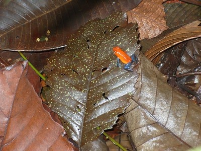

A Frog's Defences
At first sight, frogs seem rather defenceless because of their small size, slow movement, thin skin, and lack of defensive structures, such as spines, claws or teeth. Many use camouflage to avoid detection, the skin often being spotted or streaked in neutral colours that allow a stationary frog to merge into its surroundings. Some can make prodigious leaps, often into water, that help them to evade potential attackers, while many have other defensive adaptations and strategies.
The skin of many frogs contains mild toxic substances called bufotoxins to make them unpalatable to potential predators. Most toads and some frogs have large poison glands, the parotoid glands, located on the sides of their heads behind the eyes and other glands elsewhere on their bodies. These glands secrete mucus and a range of toxins that make frogs slippery to hold and distasteful or poisonous. If the noxious effect is immediate, the predator may cease its action and the frog may escape. If the effect develops more slowly, the predator may learn to avoid that species in future. Poisonous frogs tend to advertise their toxicity with bright colours, an adaptive strategy known as aposematism. The poison dart frogs in the family Dendrobatidae do this. They are typically red, orange, or yellow, often with contrasting black markings on their bodies. Allobates zaparo is not poisonous, but mimics the appearance of two different toxic species with which it shares a common range in an effort to deceive predators. Other species, such as the European fire-bellied toad (Bombina bombina), have their warning colour underneath. They "flash" this when attacked, adopting a pose that exposes the vivid colouring on their bellies.
Some frogs, such as the poison dart frogs, are especially toxic. The native peoples of South America extract poison from these frogs to apply to their weapons for hunting, although few species are toxic enough to be used for this purpose. At least two non-poisonous frog species in tropical America (Eleutherodactylus gaigei and Lithodytes lineatus) mimic the colouration of dart poison frogs for self-protection. Some frogs obtain poisons from the ants and other arthropods they eat. Others, such as the Australian corroboree frogs (Pseudophryne corroboree and Pseudophryne pengilleyi), can synthesize the alkaloids themselves. The chemicals involved may be irritants, hallucinogens, convulsants, nerve poisons or vasoconstrictors. Many predators of frogs have become adapted to tolerate high levels of these poisons, but other creatures, including humans who handle the frogs, may be severely affected.
Some frogs use bluff or deception. The European common toad (Bufo bufo) adopts a characteristic stance when attacked, inflating its body and standing with its hindquarters raised and its head lowered. The bullfrog (Rana catesbeiana) crouches down with eyes closed and head tipped forward when threatened. This places the parotoid glands in the most effective position, the other glands on its back begin to ooze noxious secretions and the most vulnerable parts of its body are protected. Another tactic used by some frogs is to "scream", the sudden loud noise tending to startle the predator. The gray tree frog (Hyla versicolor) makes an explosive sound that sometimes repels the shrew Blarina brevicauda. Although toads are avoided by many predators, the common garter snake (Thamnophis sirtalis) regularly feeds on them. The strategy employed by juvenile American toads (Bufo americanus) on being approached by a snake is to crouch down and remain immobile. This is usually successful, with the snake passing by and the toad remaining undetected. If it is encountered by the snake's head, however, the toad hops away before crouching defensively.